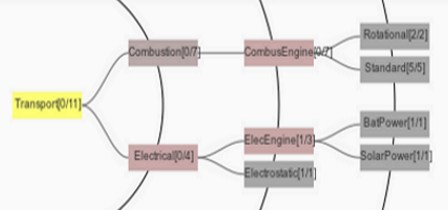

FIST / Framework to develop Idea Space evaluation metrics and Tools
This software was developed by the Design Methodologies and Life Cycle Engineering group of the CIB - Centre for Industrial Management / Traffic and Infrastructure at the Katholieke University Leuven in Belgium.It's primary focus is supporting the development of metrics to evaluate an idea space, in turn this can be used to evaluate idea generation methods (like brainstorming, ...).
Documentation on tree format
Format
The base format builds upon the JSON tree format used in the JavaScript InfoVis Toolkit. Instead of formalizing its the structure, you can study the example below. You can also peek into the other online examples trees by first loading the tree in the software and saving the it to your local drive. The coloring of a node (currently) reflects the amount of children a node has.Example JSON source and corresponding visual representation
{
"id": "0",
"name": "Transport",
"data": {},
"children": [{
"id": "ph 1",
"name": "Combustion",
"data": {},
"children": [{
"id": "wo 1.1",
"name": "Comb.Engine",
"data": {},
"children": [{
"id": "em 1.1.1",
"name": "Rotational",
"data": {"Participant": [1,4], "feasibility_rating": 2},
"children": []
}, {
"id": "em 1.1.2",
"name": "Standard",
"data": {"Participant": [1,3], "feasibility_rating": 3},
"children": []
}]
}]
}, {
"id": "ph 2",
"name": "Electrical",
"data": {},
"children": [{
"id": "wo 2.1",
"name": "Elec. engine",
"data": {"Participant": [2,3], "feasibility_rating": 5},
"children": [{
"id": "em 2.1.1",
"name": "Bat.Power",
"data": {"Participant": [2,3], "feasibility_rating": 5},
"children": []
},{
"id": "em 2.1.2",
"name": "SolarPower",
"data": {"Participant": [2,3], "feasibility_rating": 5},
"children": []
}]
}, {
"id": "wo 2.1.2",
"name": "Electrostatic",
"data": {"Participant": [2,3], "feasibility_rating": 5},
"children": []
}]
}]
} | Visual representation of the example JSON Tree  |
Documentation on idea space metrics
Variety
Can be understood as a measure indicating how "broad" your idea space has been searched. A low variety is interpreted as a narrow range of generated ideas, while a high flexibility is indicative of a broadly searched idea space. Shah et al. (2000) propose the variety as a more formal measure of the explored concept space during idea generation. In later research, Nelson et al. (2009) and Srinivasan & Chakrabarti (2010) propose refinements to the variety metric.References
Shah, J. J., Kulkarni, S. V., & Vargas-Hernandez, N. (2000). Evaluation of idea generation methods for conceptual design: Effectiveness metrics and design of experiments. Journal of Mechanical Design, 122 , 377-384.Nelson, B. A., Wilson, J. O., Rosen, D., & Yen, J. (2009). Refined metrics for measuring ideation effectiveness. Design Studies, 30 , 737-743.
Srinivasan, V., & Chakrabarti, A. (2010). Investigating Novelty-Outcome relationships in engineering design. Artificial Intelligence for Engineering Design, Analysis and Manufacturing, 24 , 161-178.
Novelty
Novelty can be subdivided in originality and paradigm relatedness (Dean et al., 2006). Originality expresses how rare an idea is (rarity), but also how ingenious, imaginative, or surprising the idea is. Paradigm relatedness expresses the degree to which an idea is radical or transformational. Since rarity can be quantified, other research has used this measure separately (Connolly et al., 1990), as substitute for originality (Jansson & Smith, 1991), or as substitute for the novelty metric as a whole (Shah et al., 2000; Linsey, 2007). Peeters et al. (2010) propose to calculate the novelty for each abstraction level leading to a more fine-grained analysis of the effectiveness of the applied idea generation method.References
Dean, D. L., Hender, J. M., Rodgers, T. L., & Santanen, E. L. (2006). Identifying quality, novel, and creative ideas: Constructs and scales for idea evaluation. Journal of the Association for Information Systems, 7 , 646-698.Connolly, T., Jessup, L. M., & Valacich, J. S. (1990). Effects of anonymity and evaluative tone on idea generation in computer-mediated groups. Management Science, 36 , 689-703.
Jansson, D. G., & Smith, S. M. (1991). Design fixation. Design Studies, 12 , 3-11.
Shah, J. J., Kulkarni, S. V., & Vargas-Hernandez, N. (2000). Evaluation of idea generation methods for conceptual design: Effectiveness metrics and design of experiments. Journal of Mechanical Design, 122 , 377-384.
Linsey, J. S. (2007). Design-by-Analogy and Representation in Innovative Engineering Concept Generation. Ph.D. thesis The University of Texas Austin, Texas.
Peeters, J., Verhaegen, P., Vandevenne, D., & Duflou, J. (2010). Refined metrics for measuring novelty in ideation. Bordeaux.